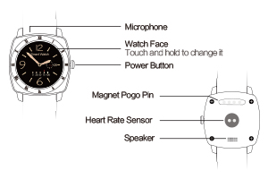

HT-880 Smart Cloud Wctch
Cover

Power button:long press to power on/off, short press to home page
Watch face：long press watch face to change different faces.
Device Connection
1.Turn on Bluetooth on both watch and mobile phone from settings.
2.Open mobile APP ：Lite Guardian
3.Follow instruction from APP to register or sign in with registered user account, choose “ bluetooth watch ” and click” searching Bluetooth watch” to start searching BT device name.
4.Choose device name“HT880”to start pairing，it will show “connected” after pairing successfully.
5.Once “connected” showing on Lite Guardian( HK) mobile app interface, then connection is done
Features and instructions
1.Time sync：in case time sync function is on (if not, please go to watch setting-clock-time sync to turn it o), time and date on mobile phone would be synchronized automatically to watch soon after pairing.
2.Function keys switch：swipe up or down watch screen to switch function list.
3.Disconnection：watch will receive disconnection alert after mobile phone and watch are disconnected.
4.Find my watch：press “find watch”on top of APP home page, watch will ring or vibrate.
5.Pedometer：click “pedometer” in function list, to turn on/off this function and also to check activity record.
6.Sleep：click “heart rate” in function list, press “start” to record sleep quality.
7.Heart rate monitoring：click “heart rate” in function list, press” start” to test heart rate.
8.SOS function：switch to SOS watch face, press “SOS”, watch will send real-time location message to mobile APP as well as to its bonded mobile phone numbers in order to quickly get assistance.
9.Wisdom secretary：click “smart secretary” from mobile APP, add reminders, the watch would remind you for your set agenda.
10.Sedentary alarm：click “ sedentary”menu to set time and click ”ok”, the watch will remind you if you didn’t move within a certain time which you set .
11.Go back menu：slide screen to the right to go back to previous page.
12.Switch watch face：long press watch face and slide the screen to choose preferred face, click “ok ”.
13.Language setting：go to watch setting-international to set language.
Charging instruction
Please use the special charger cable,the device support Apple etc popular cell phone charger, and forenvironmental protection consideration, we don't provide chargerwith device . Please select a suitable on your hand for charging.
Accessories
1.Charger cable
2.User manual
FAQ
1.Why can’t boot the watch?
A:For sake of transportation safety, it is shipped with low power, please charge it before use.
2.Why does it show “buffering”all the time during bluetooth connection?
A: Please make sure network is running properly, please click icon of “go back to previous menu” and reconnect Bluetooth.
3.Why family member can’t check real time positioning?
A: Please make sure location service is allowed when adding family member as authorized account to monitor.
4.4. Why is Bluetooth disconnected?
A：Bluetooth disconnects when your device is out of the effective range or the signal is too weak. Reconnects automatically when your device is within effective range. In response to weak signals, it may disconnect and reconnect repeatedly.
5.5. Why is there no data of activity tracking, sleep monitoring, heart rate monitoring showing on mobile APP?
A：Please make sure you are wearing the watch as well as the functions for activity tracking, sleep monitoring, heart rate monitoring is turned on; Swipe down home page of mobile APP to refresh data.
Notice
1.Please do not soak the watch in water.
2.Please keep the product away from fire, heat or any other extreme environment.
3.Please keep APP running at the backend.
Customer service
Please contact Local Retailer or our After-sales Service Center
Contact information
Welcome to contact with us if you have any queries and recommends.
Overseas
E-mail:sales@castelbds.com
Website:www.lite-guardian.com
Service Tel.:+8675586018742
Hong kong
Service Tel.:+852-26273380
Email:cs-liteguardian@castelbeidou.com
China
Service QQ:3106893070
Service Tel.:0755-8601 8738